私人健身教练 · v1.6
私人健身教练 · 实测截图
以下均为 APK 安装后的实际运行截屏，非设计稿。02 / 07 / 09 / 11–14 取自真机
（vivo V2359A / Android 16 / 1080×2400），05 / 06 / 08 / 10 为模拟器 540×960，
其余为模拟器 1080×1920。
这一版继续按样本 APK 的规格收口：底栏、图标语义、圆角与间距逐项对齐；动作插图先用
boxes.json 做主体框归一化，同一套缩放规则把「人物大小不一」拉平；
训练页顶栏独立成条，休息态改写为「第 r/R 轮 · 组间休息」。动作条目、肌群与中文要领来自
exercises-dataset（MIT），演示图与动图来自 Gym visual（已购授权）。
本版新增体重与身体成分：蓝牙直连体脂秤读体重与阻抗，18 项指标按 BIA 公式在本机算；
换手机时用同一 Wi-Fi 走「手机间同步」把训练记录与体重搬过去，全程没有云端。
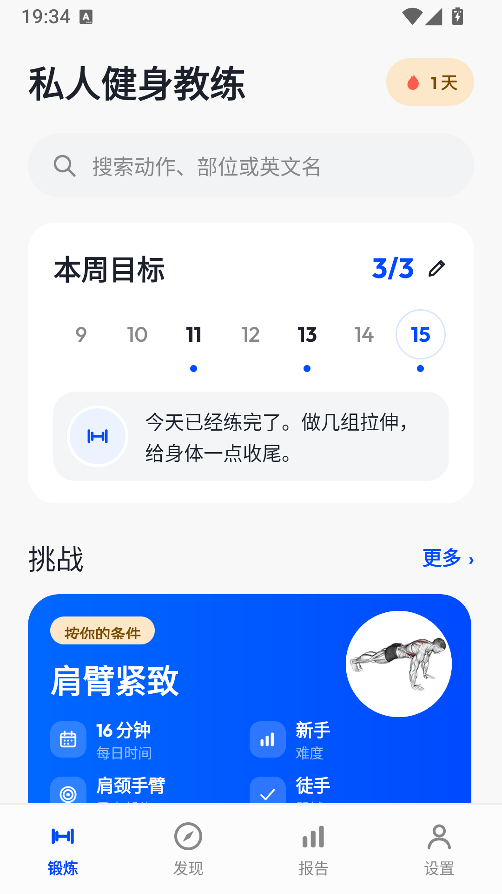
首页本周目标、连续天数、今日安排与挑战卡；今天已练完时，
提示条会换成「做几组拉伸收尾」
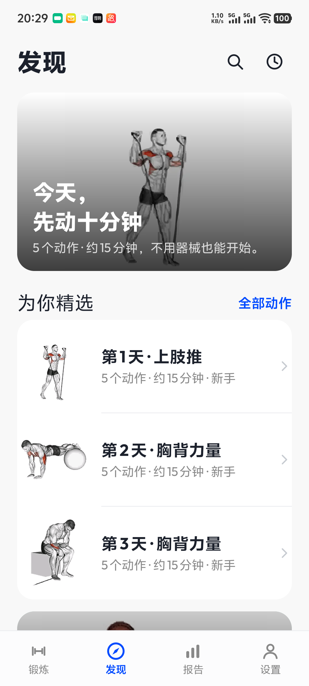
发现每日十分钟的入口，下面是按天排好的精选；
右侧「全部动作」直达动作库
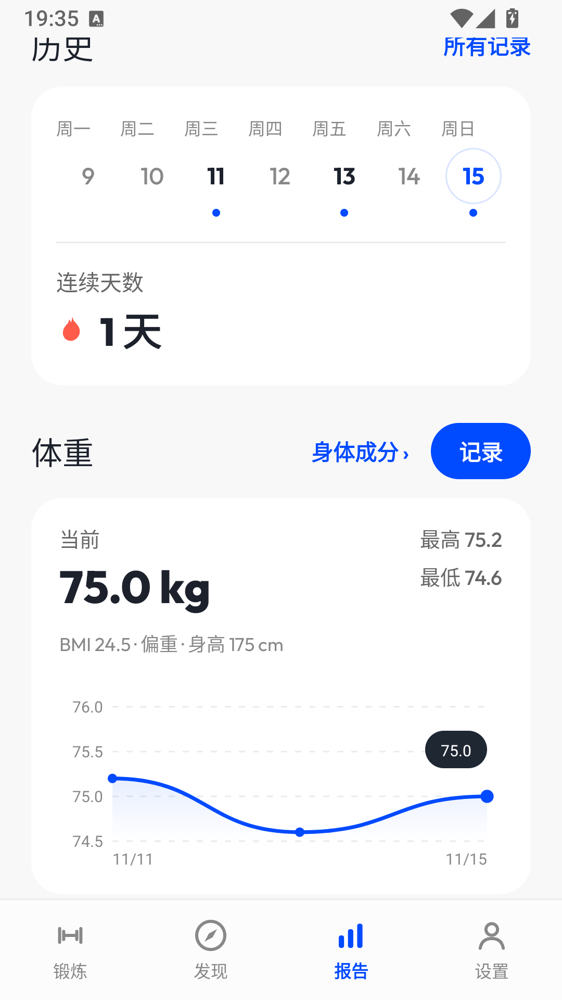
报告七日完成格与连续天数、体重曲线与「身体成分」入口；
曲线刻度落在整值上，不会出现 75.3 / 75.1 这种跳数
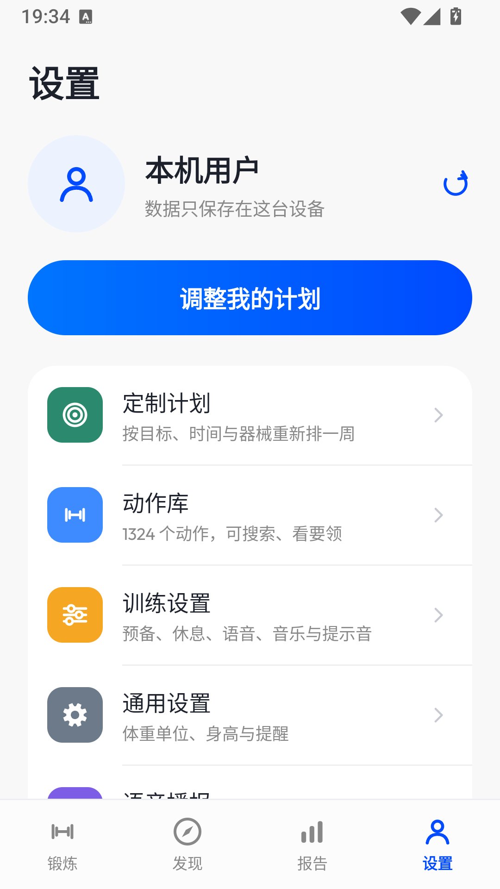
设置定制计划、动作库、训练设置、通用设置、语音播报、提醒与隐私；
往下还有「手机间同步」和「连接体脂秤」两个入口
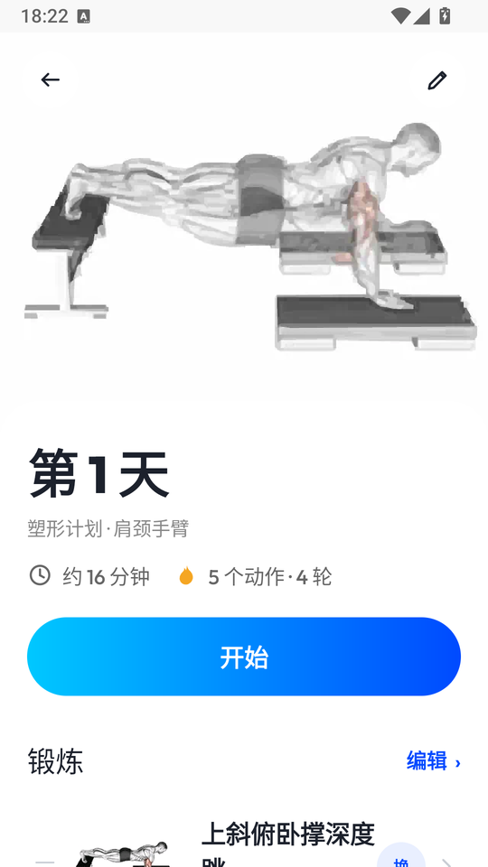
日程详情第 N 天 · 主题与重点部位、总时长、动作数与轮次，
下面是逐个动作的缩略图与秒数
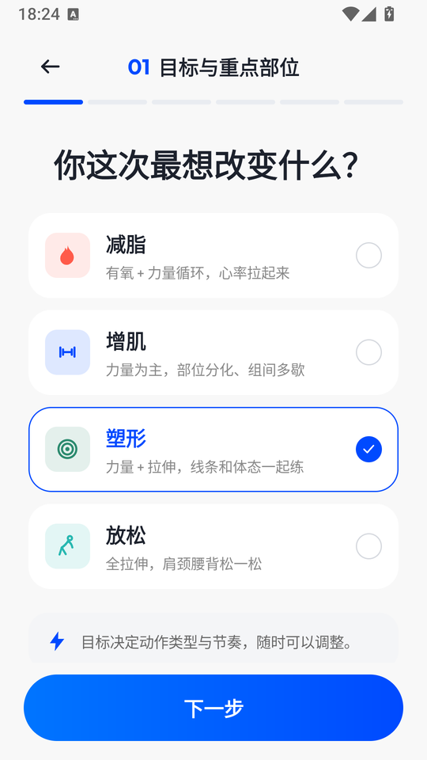
定制计划目标 / 水平 / 频率 / 时长 / 器械 / 重点六组条件，
分步选择，底部实时给出这次会排成多少动作、多少轮
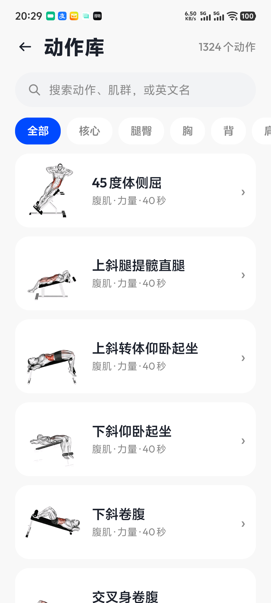
动作库1324 条全量动作，部位筛选横向滑动；卡片之间留 12dp 间隔、
各自独立圆角，滚动时不会糊成一整块；缩略图按主体框 fitCenter，人物比例一致
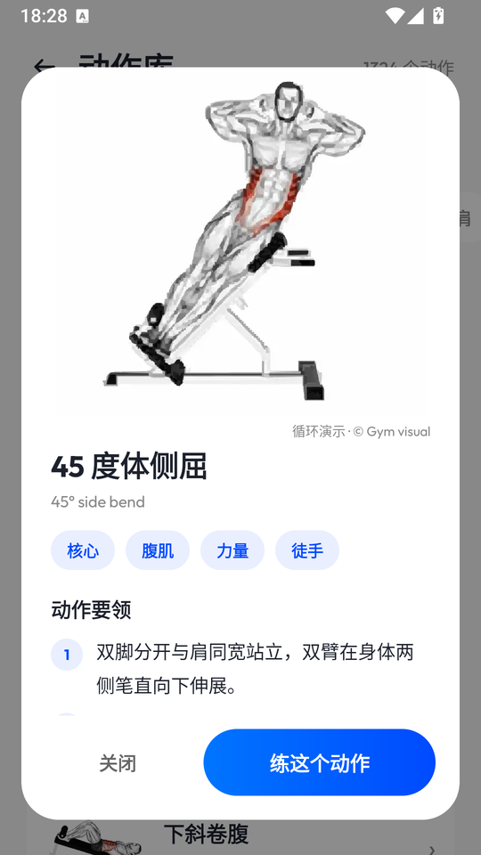
动作详情白底循环演示与卡片无缝相接，下面是中英文名、部位 /
肌群 / 类型 / 器械标签、分步中文要领；底部固定「关闭 / 练这个动作」
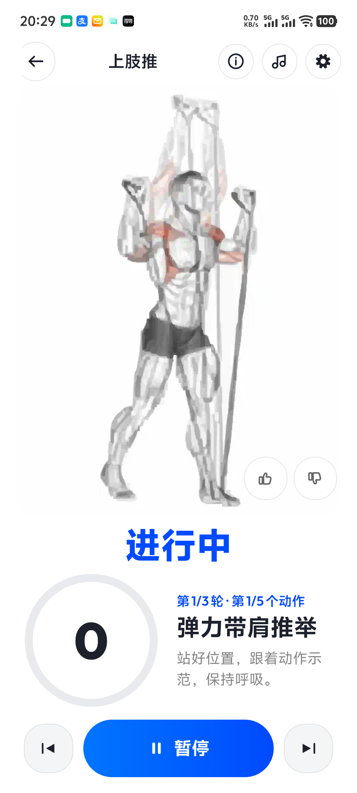
训练播放器顶栏独立成条（返回 / 要领 / 音乐 / 设置，三个按钮之间留 8dp），
不再压在白底演示图上；进度写「第 1/4 轮 · 第 1/5 个动作」，倒计时画成卡片描边
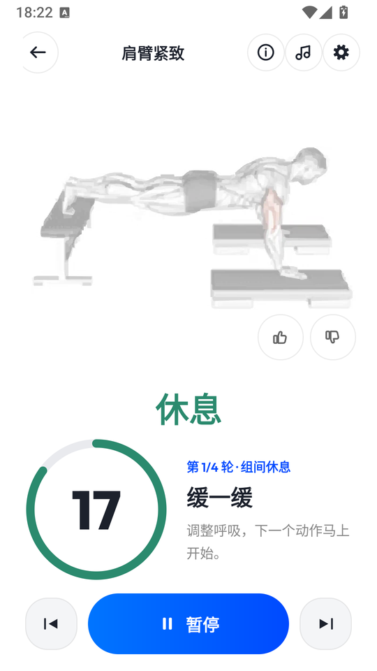
组间休息休息态用绿色描边圈并改写标签为「组间休息」，
不会把自己算成一个动作；可暂停或跳过
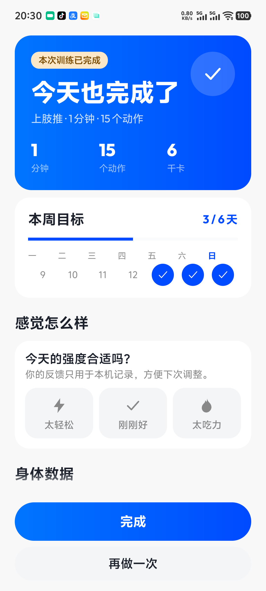
完成后时长 / 动作数 / 千卡、本周目标进度、今天的强度反馈、
体重与 BMI，顺手设提醒；底部可「完成」或再来一次
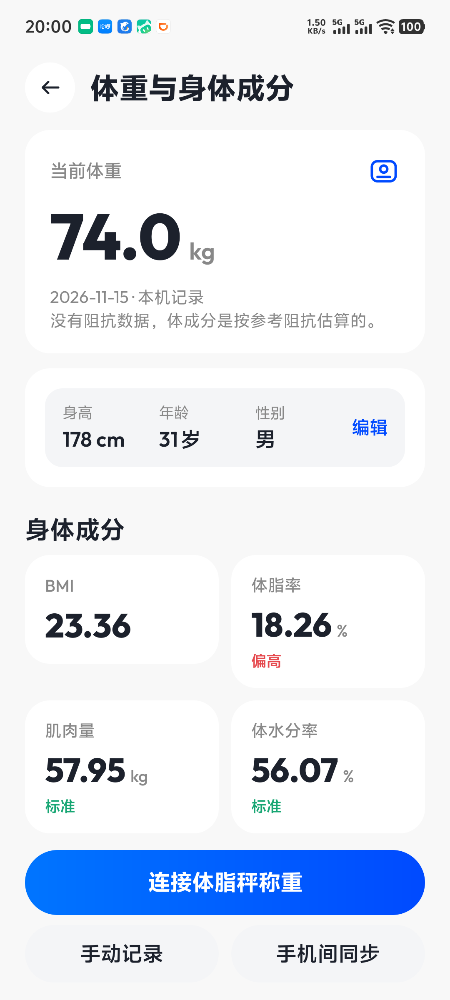
体重与身体成分当前体重、身高年龄性别，以及 BMI / 体脂率 /
肌肉量 / 水分率四宫格；下面还有 14 项细分指标与测量记录
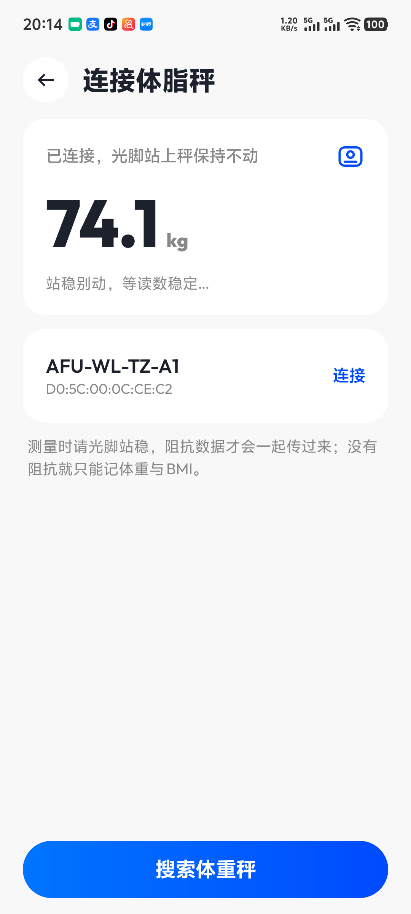
连接体脂秤真机连的是 AFU-WL-TZ-A1（AntAF 私有 GATT 协议）。
踩上秤后读数实时跟到 74.1 kg，稳定后自动落一条记录，带阻抗时顺带算出 18 项体成分
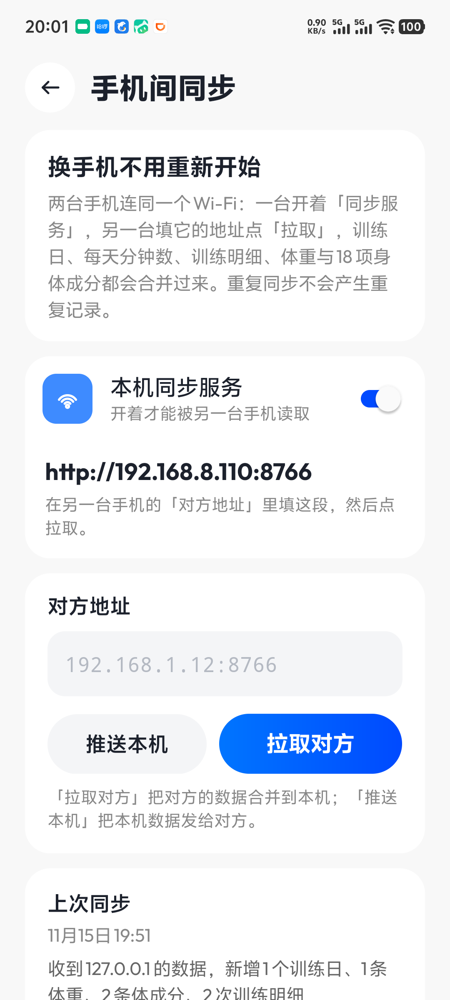
手机间同步一台开服务、另一台填地址，点对点把训练日、分钟数、
训练明细、体重与体成分合并过来；同一份数据同步多次不会重复